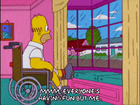
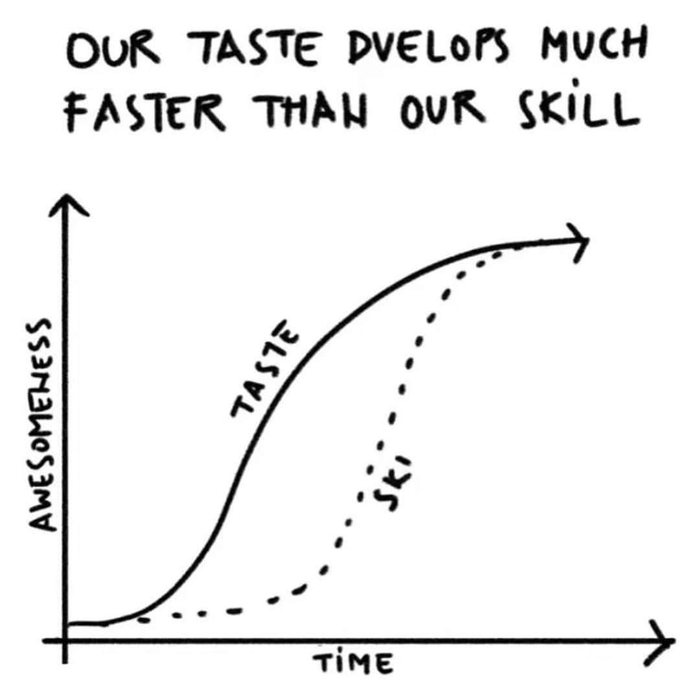

Social accounts for Content creators - When is it too much?
Jan 15 '22 • Written by Yassen Shopov
📖 9 minute read
As you may have noticed all around your social media (if you happen to lurk on Instagram especially) it seems like everybody and their mum has become a content creator. I have also graduated to this title, despite being a rather introverted engineering student who never really liked bringing all the attention to myself.
On one hand, this can easily be attributed to the growth in the creator economy. Platforms such as YouTube, Instagram, and most recently TikTok have revealed to the larger audience that it is extremely easy to go viral, sometimes with as little as a catchphrase and some minuscule amounts of luck. However, the other factor that may have greatly contributed is the rise in consumerism - especially in digital media. This is not only due to the recent lockdowns, even though they can’t be ignored. People are moving more and more aspects of their life (social or personal) online, and it is no wonder why projects like the Metaverse try hard to further this “Digital Reality“ concept.
There are more eyes than ever locked onto screens, small or big, and our attention spans as consumers are growing increasingly shorter. This could be a good thing, as it means that since you ost something online there are instantly people that will see it on the other side, even if your marketing strategy isn’t the best.
However, this poses another trap. Since as creators, we try to engage with as many people as possible, this automatically means that we spend a lot of our time on social media ourselves. It could start as a good intention - you hop on Instagram solely to post your content, and then you start scrolling. It’s not always a bad thing, since it means you get some time to interact with your followers and other creators. But Instagram’s algorithm doesn’t differentiate between creators and consumers. It will keep promoting flashy and addictive short-form content to your feed, hooking you up more and more the more time you spend on the app.
It’s not a problem with this 1 singular platform though. Many content creators use more than one social media as their marketing funnel, simply to increase their reach and engage with audiences on all social media. I also have a lot of them, including:
And as you may guess, at one point I wondered - at what point is it too much? At what point does it bring more negatives than positives to have so many social media accounts? Well, in this article, I’ll get into the mechanics of social media for content creators, why we get into negative spirals, and how I tackle this issue.
The pressure to engage
As I mentioned above, social media apps hardly ever differentiate between users. Content creators or content consumers, we all enter the same apps and receive a neatly organised feed of pretty things.
Thus, there is also this immense circle of peer pressure, mostly attributed to the fear of missing out (FOMO). Since we stay up-to-date with our friends’ social lives and personal achievements through social media, we would be missing out on a lot of their recent events if we exit the loop. I first felt this pressure to engage with social media when I started feeling like a boomer for not understanding some TikTok catchphrases my sister told me.
Then, once you install the app, you engage with tons of content on the daily, possibly getting inspired for your own content. You develop a long list of “Saved“ posts and videos, to make you feel like you are having a productive scrolling session.
But be honest, how often do you go back to your “Saved“ folder? Yeah, me neither, very rarely if ever.
So overall, it’s no wonder why we fall into the trap. Especially as content creators, it feels impulsive and logical to engage in the social media community.
The comparison trap
This is yet another sign you may be stepping too deep and engaging in too many different social media streams.
When you try to gather an audience, you try to position yourself somewhere along the consumer-content creator-master hierarchy. This means that yeah, you do possess some fictional authority over your audience, as they may look up to you and your craft, but you also automatically position yourself below other people who happen to be better than you in a range of criteria.
It is almost inevitable that you will start feeling the negatives of comparing yourself to others all the time. This is where feelings of being an impostor may start to crawl in your mind and make you feel like you’re trapped in this comparison game.
Another symptom of the “comparison trap“ I have noticed is the disparity between taste and quality of work.
You may have noticed that the more you see other people’s work, the less your own seems good. This probably happens because by observing, let’s say, good art every day, you are (1) getting a better taste of what actually makes art good, and (2) you are growing numb to the sensations that good art makes you feel, and as with any substance abuse, you need stronger and stronger doses to get the same result. There is a gap that then forms between your skills and your sense of what is “good work“. And it is much easier and faster to grow our expectations and standards than to raise the quality of the work we produce.
Schedule posting, schedule consuming
By reading this article so far, you may have already got the idea that social media is a space that is very difficult to navigate as a creator. So, do we have any chance of getting on social media without getting exposed to the negatives?
My personal strategy for dealing with this issue is to schedule my time on social media - both as a content creator and as a consumer.
It may seem logical, but it is actually hard to follow through. Once you’re into the app, it is a slippery slope, and it is extremely easy to go into “consumer mode“ when you finish posting. It helps quite a lot to create some distance between yourself and the apps in this case. There are some apps that allow you to schedule posts externally, without going on Instagram or Twitter. I am currently also in the process of building a program to help me post stuff on all my social media simultaneously, just so I don’t have to go on the apps.
The other half of the process may be harder to integrate. It goes into the field of digital minimalism to limit your screen time, but it is a well-needed step in order to achieve a better work-life balance as a content creator. However, with small steps, you will soon be able to differentiate between going on Instagram for fun, and for work.
[8:07]
by Matt D'Avella